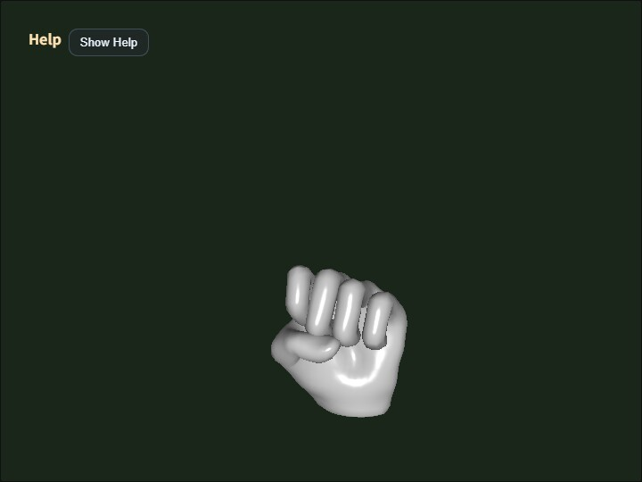

gltf_loader
English | 日本語

概要
- main.js 内で指定した glTF / GLB ファイルを読み込み、ModelAsset に正規化してから表示するサンプルです。
- WebgApp.loadModel() から glTF facade を呼び、内部で ModelAsset と runtime が組み立てられる流れを確認できます。
- 読み込んだ ModelAsset は D キーで JSON ファイルとしてダウンロードできます。
- static な親 node transform が付いた glTF では、importer 側で skinned mesh 用の親回転 / 親スケールを bake し、runtime 側へ複雑さを持ち込まない方針です。
- Blender から glTF / GLB を export する場合は、Y-up で出力したファイルを前提とします。
- loader の model origin policy は、スキニングモデルでは skeleton root、非スキニングモデルでは mesh node を原点とします。
実行方法
- 実行ファイルは ./gltf_loader.html です
- WebGPU に対応したブラウザで開き、必要に応じて Help Panel と CommandPalette を合わせて確認してください
使用している webg 機能
- WebgApp: 標準初期化、描画ループ、Help Panel 表示
- CommandPalette: animation 操作、wireframe、screenshot、JSON 出力、camera reset をまとめる操作パレット
- WebgApp.loadModel: glTF facade の高レベル入口
- ModelLoader: glTF / GLB を ModelAsset へ正規化し build / instantiate をまとめる
- ModelAsset: 検証済みデータの保持と JSON ダウンロード
- ModelAsset.getClipNames: build 前の clip 一覧確認
- ModelBuilder: ModelAsset から Shape / Skeleton / Animation を構築
- ModelBuilder.animationMap: clip id から runtime Animation を引く
- build() 結果 helper: instantiate() / createNodeTree() / bindAnimationBindings() / getAnimation() / getAnimationNames() / restartAnimation() / pauseAnimation() / resumeAnimation() / startAllAnimations() / playAllAnimations() / setAnimationsPaused()
- EyeRig(type="orbit"): world bbox 基準のオービット視点
処理フロー
- サンプルは WebgApp.loadModel(GLTF_FILE, { format: "gltf" ... }) を呼び、loader の format 判定から glTF facade へ入ります。
- ModelLoader は file を読み込み、GltfShape に parse と正規化を委ねます。
- GltfShape は material / mesh / skeleton / animation / node を ModelAsset 形式へそろえます。
- このとき、static な親 node transform を持つ glTF では buildStaticBakePlans() が走り、skinned mesh には親回転 / 親スケールを mesh / skeleton / animation へ bake します。
- non-skinned mesh では static uniform scale を geometry bake で処理する経路も残しつつ、runtime node 側でも uniform scale を扱えます。
- ModelBuilder は ModelAsset から runtime の Shape / Skeleton / Animation / Node を組み立てます。
ダウンロードした JSON の見方
- meta.source は glTF、meta.upAxis は Y になっている前提です。
- meshes[].meta.staticBake は importer が static bake を適用した mesh だけに現れます。
- meshes[].meta.bakedNodeIndex は、どの glTF node の transform を geometry へ反映したかを見るための index です。
- skeletons[].meta.staticBake は、skinned mesh の root joint 側へ親 transform bake を入れた場合に記録されます。
- nodes[].matrix は runtime 側へ残した structural transform で、skinned bake 済み node では identity になります。
- nodes[].animationBindings と animations[].targetSkeleton を見ると、どの clip がどの skeleton に接続されているかを追えます。
- gltfNodeIndex と gltfSkinIndex を見ると、JSON 上の node と元 glTF の node / skin の対応を後から追跡できます。
確認ポイント
- GLTF_FILE で指定したファイルが読み込まれ、shape / skeleton / animation が正しく構築されるかを確認します
- facade 1 回の呼び出しで、glTF の node 復元と animation binding が他形式と同じ共通 helper で行えることを確認します
- skinned mesh を含む glTF でも、static な親回転や uniform scale が importer 側で bake され、static mesh と skinned mesh の向きが大きく食い違わないことを確認します
- D キーで保存した ModelAsset JSON に staticBake meta が残り、どの node / skeleton へ bake が適用されたかを後から確認できることを確認します
- raw glTF の animation sampler に CUBICSPLINE が入っている場合は、中間値を抜いて LINEAR に変換され、Interpolation Notice と Help Panel に animationInterpolation=LINEAR converted=CUBICSPLINE->LINEAR:... 相当の情報が表示されることを確認します
- 大きい glTF / GLB を読み込むときでも、起動中は Load Progress panel に stage=... が表示され、少なくともどの段階まで進んだかを確認できることを確認します
- Rigify 系モデルでは required=... に加えて helperWeighted=...、helperAncestor=...、helperPruned=... を見ることで、helper 骨が実際に weight で使われているのか、親子関係維持のために残っているだけなのか、あるいは importer が焼き込んで削除できたのかを判断できることを確認します
- Help Panel に file / model / orbit / target / anim / clip0 / interpolation / wireframe 状態が表示され、viewer として必要な状態を画面上で追えることを確認します
- 1 キーで先頭 clip を restartAnimation(clipId) により名前指定で再始動できることを確認します
- 2 / 3 キーで先頭 clip を pauseAnimation(clipId) / resumeAnimation(clipId) により個別停止・再開できることを確認します
- glTF node の親 transform を含む world bbox に応じてカメラ距離が自動設定され、初期表示でモデル全体が見えるかを確認します
- D キーで出力した JSON を json_loader に渡して再表示できることを確認します
- Shift + Arrow と Shift + Drag で camera target を平行移動でき、細部を中央へ寄せて確認できることを確認します
- W で wireframe、S で screenshot、R で初期 framing へ戻ることを確認します
- CommandPalette から animation の replay / pause / resume、wireframe、screenshot、JSON 出力、camera reset を実行できることを確認します
- Help Panel は現在値と操作説明、CommandPalette は設定変更と実行操作という役割で読めることを確認します
AI / 利用者向けの読み取りポイント
- 「表示は合っているが scale がどこで反映されたか分からない」ときは、まず meshes[].meta.staticBake と nodes[].matrix を見ます。
- 「animation はあるが再生されない」ときは、animations[].targetSkeleton と nodes[].animationBindings の対応を見ます。
- 「clip が再生されない」ときは、Help Panel の Anim / Clip0 表示と JSON の binding を見比べます。
- 「親 node を持つ skinned mesh の向きが怪しい」ときは、skeletons[].meta.staticBake が入っているか、対象 asset が scale animation / non-uniform scale を含んでいないかを確認します。
操作方法
- ドラッグ / 矢印キー: オービットカメラ回転
- Shift + ドラッグ / 矢印キー: カメラ target の平行移動
- ホイール / [ / ]: ズーム
- Space: アニメーション一時停止
- 1: 先頭 clip を再生し直す
- 2: 先頭 clip を一時停止
- 3: 先頭 clip を再開
- W: wireframe 切り替え
- S: screenshot 保存
- D: ModelAsset JSON をダウンロード
- R: カメラをバウンディングボックス基準の初期位置へ戻す
- / または canvas ダブルタップ: CommandPalette を開く